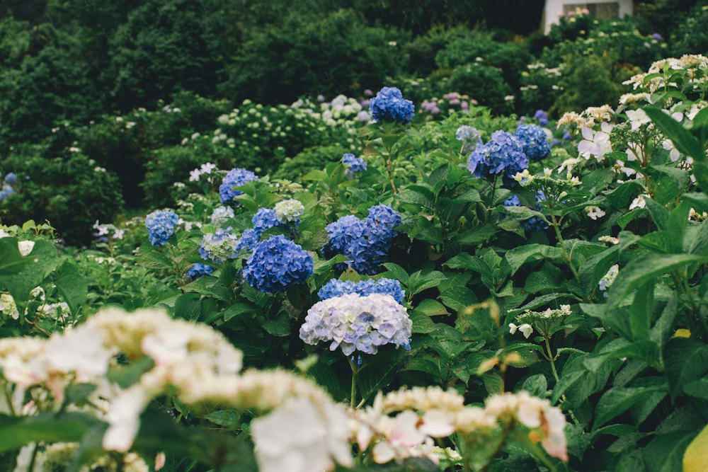
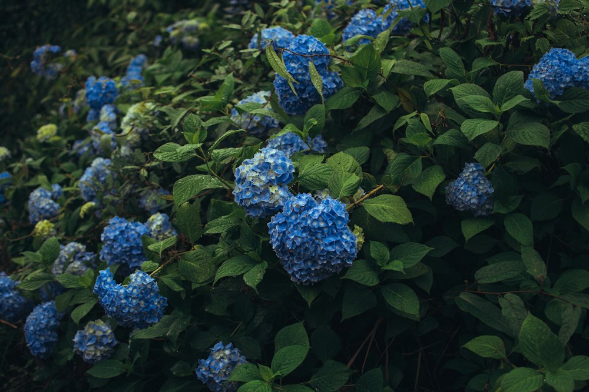
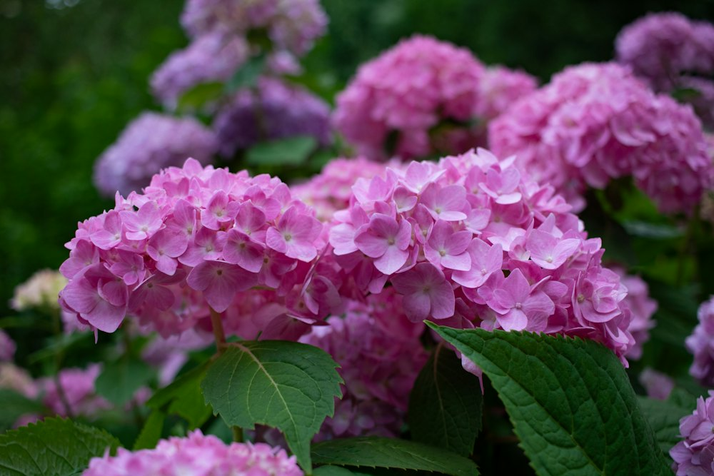
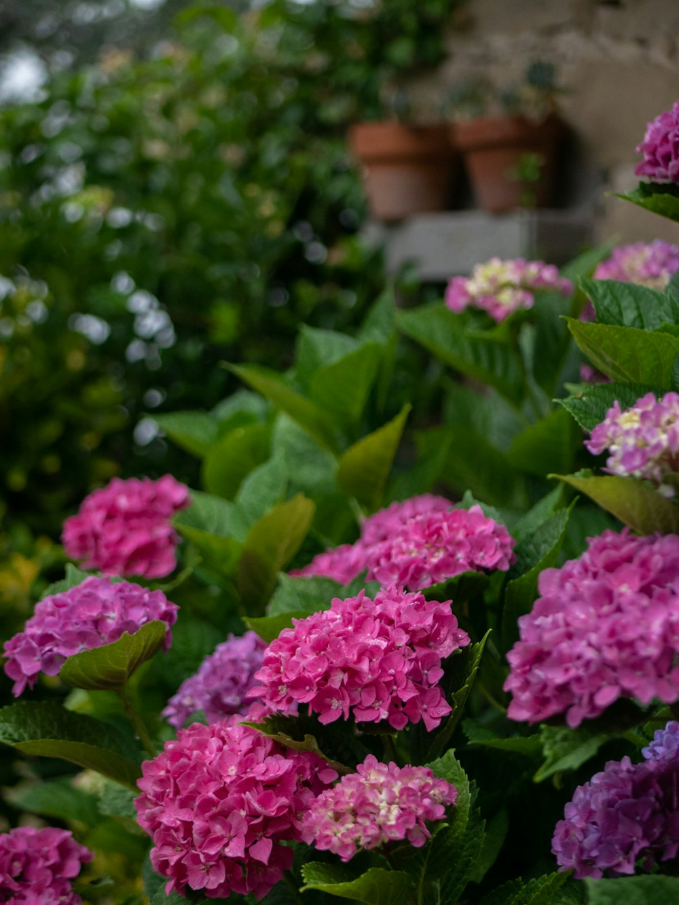

Mūsu stāsts
Viss sākās ar vienu
MILZĪGU sapni!
Reiz atradu vietu ar 1800 pamestām hortenzijām, un tā aizsākās mūsu ģimenes dārza stāsts. Šodien te kopā stādām, kopjam, radām un iedvesmojam.
Laura ♡
Vairāk nekā 2000 hortenziju, dabas skaistums
un mazi, nesteidzīgi mirkļi. Atbrauciet ciemos!
Dārzs ziemo. Hortenzijas atpūšas, un mēs jau plānojam nākamo sezonu – tiekamies vasarā!
Mūsu stāsts
Reiz atradu vietu ar 1800 pamestām hortenzijām, un tā aizsākās mūsu ģimenes dārza stāsts. Šodien te kopā stādām, kopjam, radām un iedvesmojam.
Laura ♡






No 7 līdz 16 gadiem
Līdz 7 gadiem – bez maksas
Ieeja dārzā
Nesteidzīgai atpūtai
No 70 gadu vecuma
Arī cilvēkiem ar invaliditāti
Sezonā — katru dienu 11:00–17:00, bez iepriekšējas pieteikšanās. Pēc 17:00 apmeklējums iespējams tikai iepriekš vienojoties ar saimnieci. Ziemā dārzs ir slēgts.
Pieaugušajiem €8, senioriem (no 70 g.) un cilvēkiem ar invaliditāti €7, bērniem 7–16 g. €3, bērniem līdz 7 g. — bez maksas. Norēķini skaidrā naudā un ar karti, uz vietas. Grupu atlaižu nav.
Jā, laipni gaidīti visi mājdzīvnieki. Lūdzam turēt pavadā (ja vien tas nav ļoti paklausīgs) un savākt aiz tā.
Fotosesija €25 + ieejas biļetes visiem dalībniekiem. Laika ierobežojuma nav; ieteicams pieteikties iepriekš.
Piedāvājam dzērienus — kafiju, kakao, tēju un cidoniju sulu. Ēdiens netiek tirgots, taču savu pikniku drīkst ņemt līdzi bez papildu maksas.
Jā! Galda noma €25/stundā (viens 2,5 m galds, līdz 10 cilvēkiem) — piemērots dzimšanas dienām. Kolonādes pergola €250 (vienreizēja maksa) — kāzām un korporatīvajiem pasākumiem. Sazinieties ar mums, lai vienotos par detaļām.
Aptuveni no 23. jūlija līdz oktobra vidum. Augstsezonā darba laiks dažkārt bijis garāks. Oktobra sākumā tas ir atkarīgs no pirmajām salnām — pirms brauciena iesakām piezvanīt iepriekšējā dienā.
Parastam apmeklējumam pieteikšanās nav vajadzīga — vienkārši brauciet ciemos. Fotosesijām un pasākumiem pieteikšanās ir ieteicama.
Jā, tualete ir pieejama uz vietas.
Jā, dārzs ir piemērots gan bērnu ratiņiem, gan ratiņkrēsliem.
Pie ieejas ir bezmaksas autostāvvieta. Sabiedriskais transports līdz dārzam nekursē — tuvākā pietura ir Bīriņi, 2,5 km attālumā. Maršrutam meklējiet "Augustes iedvesmas dārzs" Google vai Apple kartēs, vai Waze.
Jā, dāvanu kartes un suvenīri ir pieejami uz vietas (dažkārt var nebūt noliktavā).
Teltis un krēsli uz vietas nav pieejami — tos var nomāt no "Teltis pasākumiem". Stikla māja ir dekoratīva: tajā var brīvi ieiet, taču tā netiek iznomāta.